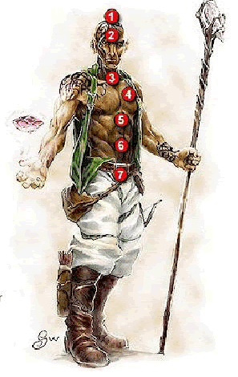

及高天赋 Ultra Talented [Metapsionic]
你可以使用灵能点为自己获得更多的精神力量。
先决条件：3级的心灵术士或心灵武士, 灵能天赋, 内心强健
效果：你可以支付2点灵能点，从而获得3个免费的零级异能。每天使用此专长耗费的灵能点不能超过自身等级。且免费零级异能数量不能超过上限。
精神冥思 Psychic Meditation
当人体疲劳时，我们会感觉到疼痛和痛苦。我们需要休息来缓解我们一天活动所带来的身体上的疲劳。如果不这样，我们就会获得疾病。但我们自身的调节功能会使我们变的健康。当晚上得到很好歇息的时候，我们
会迎来充满精神的明天。
我们同样在思考，甚至睡觉的时候做梦，我们的精神空间从来不休息。但是，通过冥思，我们仍然可以的到放松。经过短时间的冥思，一个心灵人物可以得到精神上的和谐，从而获得一些意想不到的能力。精神能量中心紧密的与这些能力联系在一起。这些精神力量对肉体也具有一定影响。
什么是精神能量中心?
精神能量中心是多种状态的集中表现点。包括意识, 器官, 腺体, 颜色, 光亮, 音乐, 和 宝石/水晶，等。在人体中具有7个精神能量中心。
精神能量中心的作用
每个能量中心都起到至关重要的作用。每个中心的作用均不相同。但是，它们都有很明确的定义。
7个精神能量中心

(1) 冠顶中心：冠顶中心在头部的正上方。它是人体一切痛苦的入口。
(2) 第三眼中心：第三眼中心在额头正中心处。此中心管理：眼睛，脑，与神经的系统。它也管理我们的感官，象视力，嗅觉，味觉，与触觉。 神经系统和大脑管理着身体的能量调节，它们发送管理身体机能的信息。头骨保护着我们的大脑，眼睛让我们观察周遍的事物。
(3) 嗓音中心：嗓音中心在人体的颈部，此精神中心管理着体质，感知和诚实与创造力。
(4) 心脏中心：心脏精神中心在人体的左胸部，它管理着人体的血液循环，离开它，我们将失去恢复能力和生存能力，因此它是最主要的精神能量中心。
(5) 光源中心：光源中心管理着我们的意志和体格坚毅，它给我们带来力量，勇气，以及对成功愿望。
(6) 底部中心：底部中心管理着我们的能量，与大地的联系，以及我们的志向。
(7) 神圣中心: 神圣中心在人体的骶骨处。它控制着我们的激情和达到欲望时获得的满足。此中心可以发掘灵能的创造力。
专长
精神冥思 Psychic Meditation [Psionic]
你让自己的精神中心得到一部分休息，从而使得它们发挥极效。
效果： 当你选择此专长，你将要选择7个精神能量中心中的一个。每个中心只能选择一次。你可以选择多次此专长，但每次必须选择不同的精神能量中心。当你冥思达10分钟后，你将激活所有你选择过的精神能量中心。但每天只能激活一次。你将得到下表中的优势，持续时间为1个小时。
表1-1：精神冥思加成
|
灵能中心 |
相关奖励 |
|
冠顶 |
获得+3天生防御加值 |
|
第三眼 |
每等级获得1点临时灵能 |
|
嗓音 |
智力、感知和魅力获得+2增强加值 |
|
心脏 |
每等级获得3点临时生命值（最多42点）。它不与其他来源的临时生命值累加。 |
|
光源 |
所选豁免检定获得+2加值，其他的获得+1 |
|
底部 |
力量、敏捷和体质获得+2增强加值 |
|
神圣 |
主要灵能DC +3，其他灵能+1 |
高等精神冥思 Intense Psychic Meditation [Psionic]
先决条件： 精神冥思 (选择7次)
效果：当你选择精神冥思专长7次后，你才能获得此专长。当你获得此专长后，你将会从精神能量中心获得更多的优势，但冥思时间提高为20分钟。持续时间为两个小时。 每次只能选择一个精神能量中心，但此专长可以多次选择。高等精神冥思和精神冥思每天使用总数为次。高等精神冥思的效果为精神冥思效果与下表累加。
表2-2：高等精神冥思加成
|
灵能中心 |
相关奖励 |
|
冠顶 |
获得+2天生防御加值 |
|
第三眼 |
每等级获得1点临时灵能 |
|
嗓音 |
智力、感知和魅力获得+2增强加值 |
|
心脏 |
快速医疗1 |
|
光源 |
所选豁免检定获得+2加值，其他的获得+1 |
|
底部 |
力量、敏捷和体质获得+2增强加值 |
|
神圣 |
主要灵能DC +2，其他灵能+1 |
潜层灵能 Subpsionics
超出我们的意识觉悟存在着潜在的心智力量。在这种情况下，在灵魂深处存在着黑暗，阴深的一面。虽然众多灵能人物不愿冒风险去发掘潜在的心智力量，但有些人利用了它。这潜在的心智力量我们叫做潜层灵能区。在意识觉悟下的力量我们称为意识灵能区。
潜层灵能提供给灵能人物一种新的施展空间。利用潜层灵能的高级灵能者能以一种不同的奇特方式展现，感觉和发掘灵能。但潜层灵能区也存在很大缺点。
首 先，潜层灵能区的思维方式与内心的神秘是混乱而有害的。其次，意识灵能区擅长一部分异能，而潜层灵能擅长另一部分：心灵创造，心灵预言以及心灵附魔系异能，但在心灵传送，心灵自塑以及心灵转化系方面较脆弱。另外，带有可见光的异能将不再能创造出白色的可见光芒，而由可见的黑色区域代替。最后，一位精深的 潜层灵能者将离意识灵能区越来越远。一位完美的潜层灵能者将能发掘，感知一些意识灵能师不能做到的异能，但也将失去一些在意识灵能师眼中很普通的异能。
潜层灵能物品 Subpsionic Items
潜层灵能物品是稀有而危险的。这些物品和一般灵能物品很相似，但在实质上有根本的区别。
具有异能效果的潜层灵能物品具有大致相同的效果，但仍然有区别：心灵传送，心灵自塑以及心灵转化系影响的物品在施展时将得到+1的DC和+1的显能师等级。心灵传送，心灵自塑以及心灵转化系的异能物品将受到显能师等级-1的处罚，这个将影响到物品中异能的范围，距离，伤害以及其他具有等级影响的效果，另外异能的DC将受到-1的减值。发掘心灵传送，心灵自塑以及心灵转化系的异能的DC将为11+显能者等级（如果有减值要算）。
潜层灵能物品将对意识灵能者造成严重的伤害。使用潜层灵能的物品的意识灵能者将受到1d4点暂时属性伤害。属性伤害为基础能系的关键属性。心灵武士和非心灵人物将受到智力的暂时伤害。当到傍晚或放下物品时，暂时属性伤害将恢复。
心灵战斗 Psionic Combat
当一个潜层灵能者在对抗意识灵能者进行心灵战斗时，对抗意志鉴定的DC有一定的调整值。在用心灵穿刺，心力榨取，心灵爆破时将获得+2的DC，但当使用自性鞭击和本我暗示时DC将受到-2的减值。
同样，在对抗心灵穿刺，心力榨取，心灵爆破时，对手的战斗DC将-2，并且自身获得+1的精神硬度。但在防御自性鞭击和本我暗示时，对手的战斗DC将+2，并且自身精神硬度-1。
在对手为潜层灵能者的心灵战斗时，被视为普通的心灵战斗。
专长
心智联合 Conjunctive Mind [Psionic]
你发现潜层灵能区黑暗和危险的一面。
先决条件：基础能系对应的关键属性15+（心灵武士 力量15+）
效果：此专长选择以后，你的异能和心灵战斗模式将变为潜层灵能区的效果，而且你也可以在不造成属性伤害下使用潜层灵能物品。在展现心灵创造，心灵预言以及心灵附魔系异能时，获得+1的DC与显能者等级。
但在展现心灵传送，心灵自塑以及心灵转化系异能时，将DC与显能者等级将-1（在显能者等级为1时，这些能系的异能将不能施展）。这些显能者等级的改变将对异能的时间，范围，伤害，距离，以及一些与显能者等级有关的效果造成影响。
从此以后，你制造的一切灵能物品将是潜层灵能物品。
特殊：对潜层灵能的知识是有代价的，当人物获得此专长，你必须在你任何一属性上减2。 而且此减值无法被恢复。
阴险心智 Insidious Mind [Metapsionic]
当你运用潜层灵能区能量时，将比使用意识能区的灵能者造成更强烈的作用
先决条件：心智联合
效果：当一个普通灵能生物使用能够侦测你的心灵异能灵能灵光（类似魔法灵光）的类灵能能力或灵能物品或是心灵异能（例如侦测灵能）时，那个普通灵能生物必须进行等级检定（DC=11+你的展现者等级），通过才能正常侦测。同样的，如果一个普通灵能生物试图用心灵异能来得知你的某个心灵异能的具体效果（例如感知灵旅），也必须通过等级检定，否则就无法得知。不管一个区域内有多少个你展现的心灵异能正在生效，这个普通灵能生物每展现一个心灵异能来侦测或探知都只能进行一次等级检定。
不过，这个好处并不会影响到你所展现的心灵传送，心灵自塑以及心灵转化系的异能。
从现在起，你侦测普通心灵异能者的心灵异能的能力被削弱了。任何心灵异能，你所展现用来侦测普通心灵异能者的心灵异能都必须通过等级检定（DC=9+展现者等级）才能生效。但这个负面效果并不影响到心灵创造，心灵预言及心灵附魔系的异能（你仍可以正常侦测它们）。
固执心智 Tenacious Mind [Metapsionic]
当你运用潜层灵能区能量时，将比使用意识能区的灵能者造成更强烈的作用
先决条件：心智联合
效果：你展现的异能更善于抵抗压制，当一位普通灵能者对你的异能进行压制或解除时，DC为15+显能者登记。这些效果只在你施展心灵创造，心灵预言以及心灵附魔系异能时有效。
从此以后，你在反制普通灵能者的异能时，需要对抗的DC也增加为13+显能者等级。使用这种DC反制的异能不包括心灵创造，心灵预言以及心灵附魔系异能。
腐化构装 Tainted Construction [Psionic]
一位潜层灵能者可以将腐化的能量注入所创建的构装体中
先决条件：心智联合
效果：在创建构装体时可以将下表中的能力归入创建时构装体能力的选择列表。这些能力具有邪恶气息，因此构装体也会为邪恶性质，表面变的灰暗而粗糙。
Table 1-1: 潜层构装能力
列表 A
次级恐惧 Lesser Aura of Fear:
在构装体周围10尺范围内的敌人进行一次意志鉴定（DC 5 + 1/2构装体等级）失败则在相关鉴定上受到-2的士气减值（相关鉴定参照 城主手册 中关于恐惧介绍）。任何HD超过构装体HD的生物不受影响。每只具有此能力的构装体只能对单一生物影响一次。
次级衰退 Lesser Withering:
每次成功的对对手的攻击，对手必须进行一次强韧鉴定（DC 5 + 1/2 构装体等级）失败则受到1点的暂时属性伤害，属性伤害类型在显能者创造构装体时决定。此能力不能累加，也不能与中级衰退和高级衰退联用。
列表 B
中级恐惧 Aura of Fear:
在构装体周围10尺范围内的敌人进行一次意志鉴定（DC 10 + 1/2构装体等级）失败则在相关鉴定上受到-2的士气减值（相关鉴定参照 城主手册 中关于恐惧介绍）。任何HD超过构装体HD的生物不受影响。每只具有此能力的构装体只能对单一生物影响一次。
中级衰退 Withering:
每次成功的对对手的攻击，对手必须进行一次强韧鉴定（DC 10 + 1/2 构装体等级）失败则受到1d3点的暂时属性伤害，属性伤害类型在显能者创造构装体时决定。此能力不能累加，也不能与次级衰退和高级衰退联用。
列表 C
高级恐惧 Greater Aura of Fear:
在构装体周围30尺范围内的敌人进行一次意志鉴定（DC 15 + 1/2构装体等级）失败则在相关鉴定上受到-2的士气减值（相关鉴定参照 城主手册 中关于恐惧介绍）并且有50%的几率失去手中物品，并且逃离构装体。 任何HD超过构装体HD的生物不受影响。每只具有此能力的构装体只能对单一生物影响一次。
高级衰退 Greater Withering:
每次成功的对对手的攻击，对手必须进行一次强韧鉴定（DC 15 + 1/2 构装体等级）失败则受到1d3点的暂时属性伤害，属性伤害类型在显能者创造构装体时决定。此能力不能累加，也不能与次级衰退和中级衰退联用。
腐化力量 Putrescence (Su):
每次成功的对对手的攻击，对手必须进行一次强韧鉴定（DC 10 + 1/2 构装体等级）失败则感染星质腐蚀（超自然疾病：持续1d6天，体质暂时-3）与一般疾病不同，此疾病只有当人物死亡，受移除疾病或相同效果的法术时才能解除。